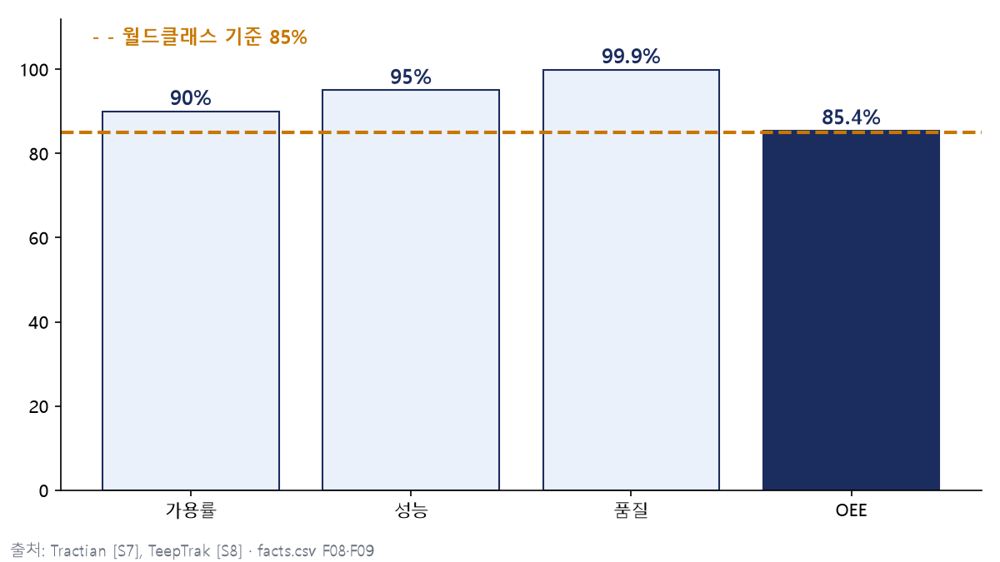

1장 MES 데이터 지도
5층ISA-95 계층 수 [S1][S2]
Level 3MES의 위치 [S1][S2]
11개MESA-11 핵심 기능 [S2][S11]
2장 데이터 연결 — OEE
85.4%가용률 90 × 성능 95 × 품질 99.9 [S7][S8]
84.6%품질만 99%일 때 — 85%에 못 미침 [S7]

3장 먼저 보는 신호 — 도입 성과
| 조사 | 품질 | 생산성 | 원가 | 납기 |
|---|---|---|---|---|
| 경남 439곳 (2022~2023 도입) [S13] | +44.3% | +22.8% | -32.5% | +17.0% |
| 전국 참여 기업 (2014~2018) [S15] | +42.5% | +28.5% | -15.5% | — |
두 조사 모두 개선 폭이 가장 큰 지표는 품질(44.3% · 42.5%)이다. 대상·시기가 달라 숫자끼리 비교하지 않고 방향만 읽는다.
교재와 출처
숫자는 모두 공개 자료에서 뽑은 facts.csv 값이다(가상 데이터 없음). 출처 번호 [S1]~[S16]의 목록은 교재 부록에 있다. 부품사 실제 MES 로그와 도입 후 불량률·리드타임 수치는 공개 자료를 찾지 못했다(미확보).